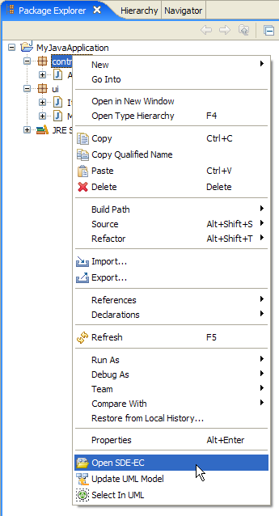

Starting SDE-EC from popup menu
In this section, you will start SDE for Eclipse from an existing Java project.
In the Package Explorer or Navigator view, select a Java project.
Right-click on it.
Select Open SDE-EC from the pop-up menu.
